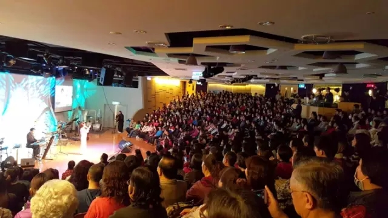

蔡琴：从「恰似你的温柔」到「哈利路亚」
2016-05-13 16:04:58 作者：淡然如水 来源：基督教论坛报
力量来自基督的温柔
“我把每一场台上演出都当成献祭给神！”金曲歌后蔡琴推出第一张福音专辑《HALLELUJAH》（哈利路亚），也是最后一张实体专辑。三月５日下午和晚上，在板桥福音堂举行两场“有情天地”福音见证会，场内场外都爆满。
蔡琴透过诗歌分享信主十三年的她，从对信仰冷默、若即若离，到现在愈来愈认识上帝的心路历程，希望更多人认识耶稣。
特别的是，蔡琴唱到自己翻译填词的《HALLELUJAH》诗歌时，不自觉地感动而单脚跪下；在谈到力量来自耶稣基督的温柔，她唱出《恰似你的温柔》，台下台上一起合唱，会场掌声不断。
真正的快乐是为别人服务
“今天站在你们面前的蔡琴，是你们的朋友、你们的仆人。一个人真正快乐的是能为别人服务。”蔡琴一开场就说，这辈子万万没想到自己会成为基督徒，过去觉得基督徒就像一群傻瓜，而且基督徒常告诉不认识的人一句让人不悦耳的话：“你是罪人！”但现在蔡琴对所有人说：“将来你们会和我一样，承认罪人是那么释放和自由，才知谁是救主！”
未信主前，蔡琴不信任何宗教，但她对生命充满好奇，所以又迷上神秘学，包括星座、八字、紫微斗数，而且一学马上就会。但蔡琴现在不再看这些，因为即使逃过痛苦或不吉祥又怎么样，她认为，人生还有更深的意义。
蔡琴在新生命小组教会聚会。她说，在制作这张福音专辑的三年中，教会为她祷告，让她感到不孤单。她在海外演唱时，教会弟兄姊妹也会为她祷告；当其他人需要祷告时，她也是代祷成员之一。
蔡琴对每场演唱会都很认真要求，她说，自己唱歌已不再是为了票房，而是祝福每一位来听歌的朋友，她在彩排时是用《耶稣爱你》这首诗歌来试音，并先祝福每一位还没入座的朋友。这次，蔡琴也用《耶稣爱你》做开场。

见证会现场
和音乐团队彩排读经祷告
蔡琴心中一直有个疑问，她唱得都是流行歌，神喜悦吗？甚至她参与很多演唱会时，连神的名都没有提，整场演唱会还叫作献祭吗？
直到有一次，她唱一首流行歌，演唱的同时神对她说话：“蔡琴，你不要担心，我无处不在，你听得到我，我也听得到你！”接着蔡琴唱出《你的眼神》，也希望演唱会能让人认识耶稣。
献唱经典歌曲《读你》之前，蔡琴谈到自己和音乐团队里的几位基督徒成员从祷告开始，后来一起读经分享，近年来更学习一章章的读圣经。但是要持续下去并不容易，平常可以读经祷告一个小时，可是因每个地方演唱的条件不同，彩排时不见得有一个小时的时间祷告，但蔡琴仍坚持下去，所以现在有八个成员为整个团队和观众祷告，他们也读完《约翰福音》和《希伯来书》，目前已读完《创世记》一半。
第一首福音歌曲
蔡琴说，很多慕道友经过教会，脚想踏进来又缩回去，她很能体会这些人的感受，因为当他们听到教会“内行话”（宗教术语），心里就有一道隔阂。所以她期待有一天要唱福音歌曲，是没有界限，让慕道友能受感动而愿意跨进教会。
她和音乐总监詹凌驾弟兄志趣相投，于是由詹凌驾作曲、她作词的第一首福音歌曲《12月22》。她说，曲名“十二月22”是因她在生日半夜写出来的词。
当蔡琴献唱《被遗忘的时光》之前表示，当我们顺境时，很少人感谢上帝；但当逆境时，又常呼求神“你到底看到了没？听到了没？”、“到底为什么？”、“你在哪里？”蔡琴强调，其实神每时每刻都在想我们，而我们有没有想祂？
“爱声声藏在传说中，那是君王为祂而弹奏，但你从不在意听过是否……”与专辑同名诗歌《HALLELUJAH》，是加拿大诗人柯恩所作的名曲。在夜深人静的夜晚，蔡琴将这首曲填词，写成中文版的《HALLELUJAH》，低沉优美的嗓音，感动人心。